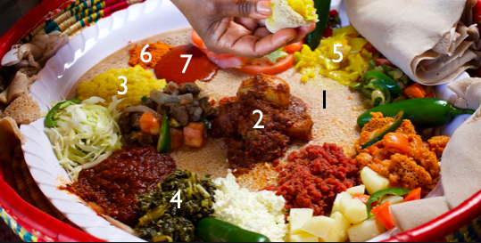

Eritrean Cuisine
Traditional Eritrean Cuisine consists of injera, a pancake-flatbread, which is eaten with different stew-like dishes. These stews are a mix of being meat based and also vegetarian/vegan based.

1- Injera: the sour pancake-flatbread that is made through fermenting several flours, like wheat, barley and millet. Traditionally it is made with teff flour.
2- Tsebhi: meat (either red meat like beef or white meat like chicken) stew that is prepared with spices- this is the most traditional stew eaten.
3- Tumtumo: a lentil stew.
4- Hamlee: a vegetable stew made traditionally made with greens like spinach. It can also be made with other greens, like kale.
5- Alicha: a vegetable stew made with large chopped pieces of potatoes and carrots. It also sometimes contains green beans and peppers.
6 and 7- Berbere (6) and Awaze (7)- a traditional chilli powder that is used in mostly all dishes. Awaze is a paste version of betbere.